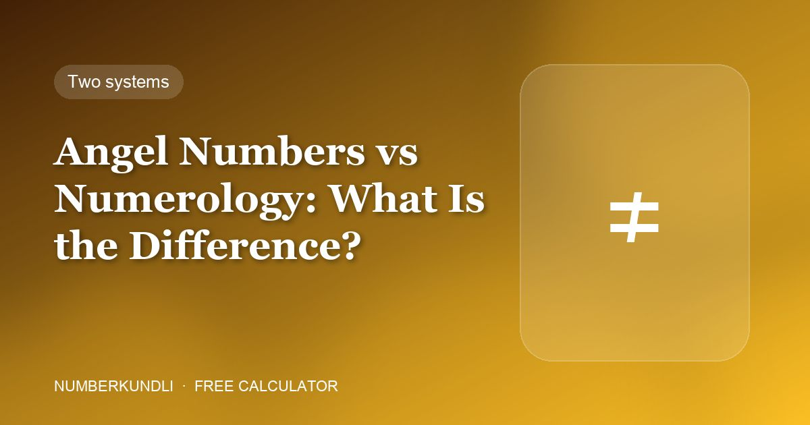

Angel Numbers vs Numerology: What Is the Difference?

People use "angel numbers" and "numerology" interchangeably, and they are not the same thing. They differ in age, in method, in what they claim, and in what you can usefully do with them.
Side by side
| Numerology (Chaldean) | Angel numbers | |
|---|---|---|
| Age | Traced to Mesopotamian practice; centuries old | Popularised in the 1990s, spread by social media |
| Input | Your date of birth and name — fixed facts about you | A number you happened to notice |
| Method | Fixed arithmetic: letters and dates reduce to digits | A lookup table of sequence meanings |
| Personal? | Yes — your numbers are yours | No — 444 means the same for everyone |
| Planets | Central: every number has one | Not used |
| Used for | Choosing a number, name, PIN, date | Interpreting a moment |
The biggest difference: personal vs universal
This is the one that matters. Numerology is personal — your Birth number comes from your day of birth, your Destiny number from the full date, and every recommendation follows from those. Two people get different answers because they are different people.
Angel numbers are universal. 444 is said to mean stability for everyone who sees it, regardless of when they were born. There is nothing in the system that varies by person, which is also why it is so shareable: one meaning fits all.
Where they do overlap
One place, and it is a real one. Every angel number can be reduced — add the digits down to a single number — and the result is an ordinary numerology number with a planet attached:
| Sequence | Adds to | Root | Planet |
|---|---|---|---|
| 111 | 3 | 3 | Jupiter |
| 222 | 6 | 6 | Venus |
| 444 | 12 | 3 | Jupiter |
| 777 | 21 | 3 | Jupiter |
| 888 | 24 | 6 | Venus |
| 1111 | 4 | 4 | Rahu |
Once you have the root, ordinary numerology takes over: is that number friendly to your Birth and Destiny numbers? The angel number calculator does both halves — the folklore meaning and the reduction — in one step.
Which should you use for a decision?
Neither has evidence behind it, so this is a question about which is less likely to mislead you. On that test, numerology at least has the virtue of being consistent: the same input always gives the same answer, the arithmetic is checkable, and it does not depend on what you happened to glance at. Angel numbers depend entirely on what you noticed and remembered, which is the least reliable input there is.
If you are choosing a mobile number, a name spelling or a PIN, use numerology. If you saw 1111 on a clock, treat it as a prompt to think for two seconds and leave it there.
Frequently asked questions
Are angel numbers part of numerology?
No. They borrow the idea that numbers carry meaning, but the system, the age and the method are different. Numerology works from your date of birth; angel numbers work from what you noticed.
Can I use both?
Yes, as long as you keep them separate. Reduce the angel number to its root and you can check that root against your own numbers — that is the only honest bridge between them.
Which is older?
Numerology by a very long way. Chaldean practice is traced to Mesopotamia; angel numbers date to the 1990s.
Why does the same sequence mean different things on different sites?
Because there is no authoritative source. Angel number meanings are folklore that each writer restates slightly differently, unlike numerology arithmetic, which is fixed.